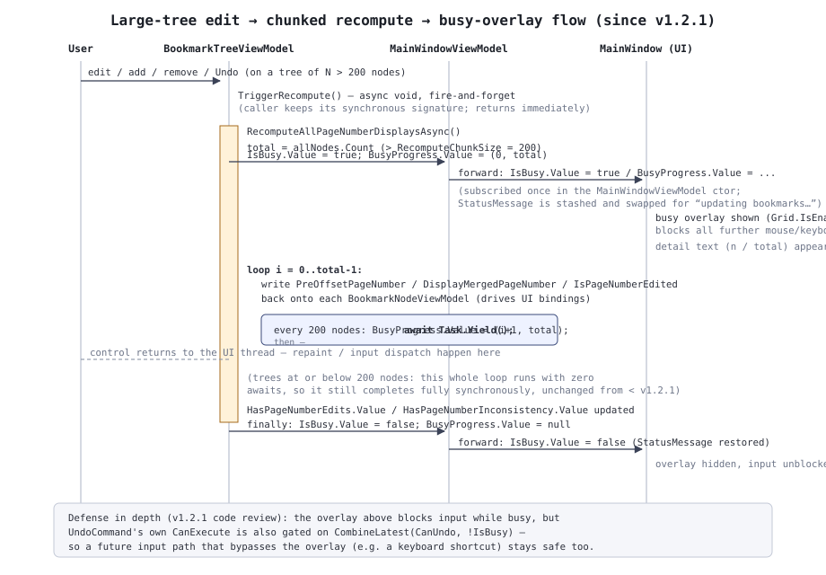

App層設計
PdfBookmarkMerger.App はUIフレームワークに依存しないViewModel層・
アプリ共通サービス層。ServiceCollectionExtensions.AddPdfBookmarkMergerApp()
で IUserSettingsService / FileListViewModel /
BookmarkTreeViewModel / MainWindowViewModel を
Singleton登録する。いずれのViewModelも ViewModelBase
(CompositeDisposable Disposables を持つだけの薄い基底クラス)を継承し、
Reactive.Bindings の
ReactivePropertySlim<T> / ReactiveCommand /
AsyncReactiveCommand でプロパティ・コマンドを公開する。
1MainWindowViewModel
メインウィンドウ全体を統括し、Step
(WorkflowStep.SelectFiles → EditBookmarks)
の遷移と4つの主要コマンドを管理する。
| コマンド | CanExecute | 処理 |
|---|---|---|
| ConfirmFilesCommand | HasFiles && !IsBusy | 全ファイルのメタデータを並列読込 → しおり抽出・結合後ページ番号計算 → BookmarkTree.Load → Step = EditBookmarks |
| MergeCommand | (Step==EditBookmarks) && !IsBusy && !HasPageNumberEdits | 保存先ダイアログ→(設定により)プロパティ編集ダイアログ→PdfMergeService.MergeAsync |
| SaveBookmarkSettingsCommand | (Step==EditBookmarks) && !IsBusy && !HasPageNumberInconsistency | 保存先ダイアログ→BookmarkSettingsExportService.ExportAsync |
| BackToFileListCommand | (Step==EditBookmarks) && !IsBusy | Step = SelectFiles に戻る |
ConfirmFilesAsync は各ファイルのメタデータ読込を
SemaphoreSlim(上限 Math.Clamp(Environment.ProcessorCount, 1, 8))
で並列化し、Task.WhenEach で完了順に結果を反映する。一部ファイルの読込失敗は
PdfFileEntryViewModel.LoadFailed へ記録され、以後のしおりツリー構築・
実際のPDF結合(MergeAsync)の両方から一貫して除外される
(過去の回帰: しおりツリーからは除外されるが結合対象には残ってしまうバグの再発防止テストあり)。
MergeCommand が !HasPageNumberEdits を
要求するのは、結合前ページ数編集中は結合後PDFの実際のページ位置と画面表示・書き出し内容が
食い違うため。SaveBookmarkSettingsCommand が
!HasPageNumberInconsistency を要求するのは、編集の結果ページ数が1未満に
なるような不整合が起きている場合、正しいXMLを書き出せないため
(HasPageNumberEdits/HasPageNumberInconsistencyは
BookmarkTreeViewModel 側で管理、後述)。
1.1 busy / progress の転送 v1.2.1〜
BookmarkTree.IsBusy.Subscribe(busy => { ...; IsBusy.Value = busy; });
BookmarkTree.BusyProgress.Subscribe(p => BusyProgress.Value = p);
コンストラクタでこの2行を購読することで、BookmarkTreeViewModel 内部の
大量ノード再計算(後述 §2.6)による busy状態を、ファイル読込・PDF結合と
同じ IsBusy/BusyProgress 経由でUI
(処理中オーバーレイ)へそのまま反映する。busy開始時は現在の StatusMessage
を退避して「しおりの情報を更新しています…」に差し替え、終了時に復元する。
2BookmarkTreeViewModel
しおり編集ツリー(手順2/3)の中心ViewModel。D&Dによる並べ替え・再親子付け、追加・削除・
レベル操作、タイトル等の編集結果を Core.Models.BookmarkNode ツリー
(_rootModel)へ同期する。
2.1 公開プロパティ
| プロパティ | 型 | 役割 |
|---|---|---|
| RootNodes | ObservableCollection<BookmarkNodeViewModel> | ルート直下のノード一覧(UIバインド対象) |
| ForceFitForAll | ReactivePropertySlim<bool> | オンの間、全ノードの表示方法・座標コントロールを不活性化し結合時は一律Fit扱い(個々の設定値自体は変更しない) |
| GlobalExpandOverride | ReactivePropertySlim<bool?> | 「一律で展開表示を設定」の3状態(true=全展開/false=全収納/null=個別設定に従う) |
| CanUndo / UndoCommand | — | 後述 §2.4 |
| HasPageNumberEdits / HasPageNumberInconsistency | ReactivePropertySlim<bool> | 結合前ページ数編集の状態(MainWindowViewModel のCanExecuteへ伝播) |
| IsBusy / BusyProgress | ReactivePropertySlim<bool> / ReactivePropertySlim<BusyProgressInfo?> | 後述 §2.6 |
| TitleColumnBaseWidth | ReactivePropertySlim<double> | タイトル列の共有基準幅。実測はUI側(MainWindow.xaml.cs等)が行う |
| ExpandLevelInput / CollapseAllCommand / ExpandAllCommand | — | 後述 §2.7 |
2.2 構造編集(追加・削除・移動・レベル操作)
AddRoot / AddChild /
AddSiblingAfter / Remove /
Move はいずれも「Undoスナップショットを積む →
RootNodes(UI用ObservableCollection)と _rootModel
(Coreモデル)の両方を更新 → TriggerRecompute()」という共通パターンを
踏む。Move は同一コレクション内移動時のインデックス補正、および移動先が
自身の子孫でないことの検証(IsDescendantOf)を行う。
PromoteLevel/DemoteLevel は実体としては
いずれも Move の特殊形(親の直後の兄弟へ/直前の兄弟の末尾の子へ、
それぞれ再配置)として実装されている。
SetChildLevelCapAsync(node) はダイアログで選択された絶対レベルより
深い下位要素を TruncateBelowLevel で一括削除する。
新規追加ノードには、その時点で有効な「一律でFitに設定」「一律で展開表示を設定」の上書きを
即座に適用する(ApplyCurrentOverridesToNewNode)。この適用自体は
追加操作の一部として扱われ、独立したUndoスナップショットにはならない
(_suppressUndoSnapshots で抑止)。
2.3 結合前ページ数編集
BookmarkNodeViewModel.PreOffsetPageNumber が編集されると
BookmarkTreeViewModel.OnPreOffsetPageNumberChanged(node, newValue)
が呼ばれ、
- 差分
delta = newValue - 編集前の実効値を求める(0なら何もしない)。 - 同一ファイル(
SourceFileEntryId)内で、編集されたノードのOriginalPageIndex以降(ツリー上の表示順ではなく、 抽出元PDFのページ構造上の位置基準)にある全ノードのPageOffsetへ一律加算する。 TriggerRecompute()を呼ぶ。
ResetFilePageNumbers(node) は、個々のノード単位のリセット
(そのノード以降のみ戻す)ではリセット対象より前のページへの過去編集が残ってしまうため、
同一ファイル全体の PageOffset を一括で
null へ戻す。そのファイルに編集が1件もなければ何もせずUndo履歴も積まない。
結合後ページ数への反映は ComputeCumulativeDeltaBeforeFile() が担う。
ファイルごとに「そのファイル内で最も OriginalPageIndex が大きいノードの
PageOffset」(=そのファイル全体に効く累積差分。どの編集も自身の位置以降=
最終ページを含む範囲に及ぶため)を求め、結合順(_orderedFileIds)に沿って
積算することで、各ファイルについて「自分より前のファイルの累積差分の合計」を得る。この関数は
RecomputeAllPageNumberDisplaysAsync と ToExportModel
の両方から呼ばれる、読み取り専用の集計処理(チャンク分割はしていない。プロパティ書き戻しを伴わない
ため実測負荷は書き戻しループよりずっと小さい)。
2.4 Undo
App/Undo/UndoHistory<T> は、スナップショットの推定サイズ(バイト)を
積算し、合計が上限(既定100MB)を超えたら最新の1件を除き最古から破棄する、メモリ量ベースのスタック。
BookmarkTreeViewModel はこれを string
(_rootModel のJSONシリアライズ)特化で使用する。
PushUndoSnapshot()(引数なし) — 構造操作の直前に呼ぶ、常に1件積むコアレスなし版。PushUndoSnapshot(coalesceKey)— プロパティ編集用。同一キーへの連続呼び出しが800ms(SnapshotCoalesceWindow)以内なら1回の編集とみなし、履歴を積み増さない(テキスト入力中の1文字ごとの履歴増殖を防ぐ)。Undo()— 最新スナップショットをJSONデシリアライズしRebuildTreeへ渡す(履歴自体はPopされ消費される。LIFO順)。
BookmarkNodeViewModel の各プロパティ(Title/IsOpen/DestinationType/座標)は、
構築時の初回リプレイ値を Skip(1) で除外した上で変更ごとに
RequestUndoSnapshot を呼ぶ。「一律でFitに設定」「一律で展開表示を設定」の
上書き適用自体は表示上の一時的な変更(オフに戻すと自動復元)でありUndo対象の「編集内容」ではないため、
_suppressUndoSnapshots で抑止する。
2.5 CanUndo/UndoCommand のCanExecute v1.2.1〜
var canUndo = CanUndo.CombineLatest(IsBusy, (canUndo, busy) => canUndo && !busy); UndoCommand = new ReactiveCommand(canUndo);
大量ノードのチャンク処理中(IsBusy)は、処理中オーバーレイがマウス操作を
ブロックすることが主な防御だが、それだけに頼らず UndoCommand 自身の
CanExecuteにも !IsBusy を組み込んでいる(オーバーレイを経由しない将来の
入力経路、例えばキーボードショートカット等から進行中の再計算と競合する余地を理論上残さないための
多重防御。コードレビューで追加)。
2.6 大量しおり時の応答性 — チャンク処理 v1.2.1〜

RecomputeAllPageNumberDisplaysAsync()(旧称
RecomputeAllPageNumberDisplays、内部
_isRecomputingPageNumbers フラグで自己書き戻しからの再帰を防ぐ)は、
ツリー構造・PageOffset を変更しうるすべての操作(読込・Undo・追加・削除・
レベル上限切り詰め・編集)の後に呼ばれ、全ノードの PreOffsetPageNumber/
DisplayMergedPageNumber/IsPageNumberEdited
を再計算して書き戻し、HasPageNumberEdits/HasPageNumberInconsistency
を更新する。
対象ノード数が RecomputeChunkSize(200件)を超える場合のみ、書き戻し
ループを200件ごとのチャンクに分割し、各チャンクの合間に await Task.Yield()
でUIスレッドへ制御を返す。この間 IsBusy/BusyProgress
を更新し、MainWindowViewModel が自身の同名プロパティへ転送することで、
専用UIを新設せずファイル読込時と同じ処理中オーバーレイ・進捗表示を再利用する。200件以下の小規模な
ツリーでは内部で一度も await が発生せず、これまでどおり完全に同期的に
完了する(小規模ツリーでの不要なオーバーヘッド・ちらつきを避けるため)。
構造編集メソッド群(AddRoot等)は同期メソッドのままシグネチャを変えずに
済ませるため、TriggerRecompute()(async void
のfire-and-forgetラッパー)を経由して呼び出す。
private async void TriggerRecompute() => await RecomputeAllPageNumberDisplaysAsync();
小規模ツリーでは内部で一度もawaitしないため、このメソッドから戻った時点で実質的に処理は完了して おり、既存の同期呼び出し前提のテスト・コードビハインドは無改修で動作する。大規模ツリーでは処理中 オーバーレイがしおり編集画面全体を覆いマウス操作を受け付けなくなるため、実行中に本メソッドの別呼び 出しが(ユーザー操作起点で)重ねて発生することは想定していない。
2.7 ツリー開閉レベルの一括指定 v1.2.2〜
しおり編集ツリー直上の「-」ボタン・レベル指定テキストボックス・「+」ボタンを支えるロジック。
ExpandLevelInput(ReactivePropertySlim<string>) — テキストボックスと双方向バインドする。値が有効な数値(0以上、現在のツリーに含まれる最大レベル以下の整数)に変わるたびに、その数値以下のレベルのノードをIsExpanded=true、それを超えるノードをIsExpanded=falseに変更する(例:"3"ならレベル1〜3が開き、レベル4以降が閉じる)。適用処理自体(ApplyExpandLevelAsync)は §2.6 のRecomputeAllPageNumberDisplaysAsyncと同じチャンク処理・IsBusy/BusyProgressの枠組みをそのまま再利用しており、大量しおりのツリーでも一括開閉でUIがフリーズしない。CollapseAllCommand(「-」ボタン) —ExpandLevelInputを"0"に設定する(全ノードのレベルは1以上のため、LevelNumber <= 0は常に偽になり全ノードが閉じる)。ExpandAllCommand(「+」ボタン) —ExpandLevelInputをツリーの現在の最大レベルに設定する(全ノードのLevelNumberが必ずその値以下になるため全ノードが開く)。両コマンドともUndoCommandと同様!IsBusyをCanExecuteに含める。NormalizeExpandLevelInput()(public) — 数値以外、またはツリーに含まれない数値(現在の最大レベルを超える値)が入力された場合に空文字へ正規化する。テキストボックスのLostFocus時にコードビハインドから呼ばれるほか、AddRoot/AddChild/AddSiblingAfter/Remove/Move/SetChildLevelCapAsync/読込・元に戻す各操作の内部からも呼ばれ、しおり側の構造編集によって現在値がツリーに含まれなくなった場合も自動的に空へ戻す。
3BookmarkNodeViewModel
しおりツリーの1ノード分のViewModel。Title/IsOpen/DestinationType/Left/Top/Right/Bottom/Zoom
の各 ReactivePropertySlim<T> は、値が変わるたびに対応する
Model(BookmarkNode)へ直接反映しつつ、
BookmarkTreeViewModel へUndoスナップショット要求を送る。構築時の初回
リプレイ(ReactivePropertySlim.Subscribe は購読直後に現在値を1回
リプレイする)を Skip(1) で除外しないと、ノード生成のたびに実際の変更なし
でUndo履歴が積まれてしまう(Undo自体がツリーを再構築するため、無限増殖するバグになる)。
PreOffsetPageNumber だけは他プロパティと異なり Model
へ直接反映しない。編集後の値をどのノードへどう波及させるか(同一ファイル内の後続・後続ファイルへの
結合後ページ数の連鎖)は BookmarkTreeViewModel 側でまとめて計算する必要が
あるため、変更通知のみを上位へ渡す。
IsDestinationTypeEditable/IsLeftEditable/IsTopEditable/IsZoomEditable
は、選択中の表示方法(XYZ/Fit/FitH/FitV)
に応じて実際にPDFへ反映される座標コントロールのみを活性化する派生プロパティ
(ForceFitForAll がオンの間はすべて不活性化)。
4FileListViewModel
結合対象PDFファイル一覧(手順1)。D&D/ダイアログでの追加(AddPaths)、
選択ブロック単位の上下移動(MoveSelectionUp/MoveSelectionDown、
選択が連続していない場合は何もしない)、D&D並べ替え(MoveTo)を扱う。
GetMoveAvailability は選択が空または非連続なら両ボタンとも非活性を返す。
5サービス
| 型 | 役割 |
|---|---|
| IDialogService(実装はWpf/Avalonia側) | ファイル/フォルダ選択・保存・プロパティ/設定/レベル上限ダイアログの表示 |
| IUserSettingsService / UserSettingsService | ユーザー設定の読み取り(IOptionsMonitor 経由)・原子的な保存 |
| AppLanguageBootstrapper | 起動時の表示言語確定・設定ダイアログでの即時切替 |
| AppPaths | 設定・ログの保存先パス解決 |
6補助的なViewModel
PdfFileEntryViewModel(ファイル一覧の1行、PageCount/LoadFailed を保持)、
PropertiesDialogViewModel・SettingsViewModel・LevelCapDialogViewModel
(各ダイアログの入力値をViewModel化したもの、WPF/Avalonia共通で IDialogService
の実装から生成・破棄される)。SettingsViewModel は
v1.2.2〜、設定ダイアログに表示する
AppVersion(string)も公開する。
Assembly.GetExecutingAssembly() の
AssemblyInformationalVersionAttribute から取得した値で、
Directory.Build.props の <Version>
がビルド時にそのまま書き込まれたものを使う。